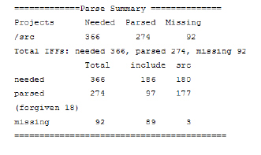

To debug parse errors
1 Open the model build log, if not already open in a text editor or the administration client model build panel.
Note: You can also display the build summary by clicking the model version in the Navigator panel.
2 Search for the Parse Summary section of the log that summarizes file building results, for example:

The example report illustrates that Code
Integrity tried to build 180 files; 177 were built into the model. Eighteen (18) files had forgivable (non-catastrophic) parse errors. Three (3) catastrophic errors occurred, where the file was not built into the model.
Note: Once you have a summary, you know how many files need attention. You should examine the first error in any failed file in the log. Most often, correcting the first error saves time and possibly corrects other errors that have occurred.
3 Locate the compile line from your first source file that had a parse error, for example:
Long lines beginning with the following:
• C files
aset_CCcc -IF_File [temporary IF file name]... file name
• Java files
aset_jfe -IF_File [temporary IF file name]... file name
• SQL files
dis_sql -o [temporary IF file name]... file name
Using C code compile line for bits.c:
aset_CCcc --IF_file "/usr/tmp/mbtmp_parse__psales_1.12124/tmpif.12124" --relative_path_base "/net/psales/space/apps/CosmosProject-1.2.4" --GNU_compatible_AST --c -I/net/psales/space/apps/CosmosProject-1.2.4 -D__svr4__ -D__SVR4 -D__GCC_NEW_VARARGS__ --gnu_asm /net/psales/space/apps/CosmosProject-1.2.4/bits.c
4 Copy and paste the compile line at a command prompt, and remove the IF file and temporary IF file name, for example (command line, using the previous compile line):
aset_CCcc --relative_path_base "/net/psales/space/apps/CosmosProject-1.2.4" --GNU_compatible_AST --c -I/net/psales/space/apps/CosmosProject-1.2.4 -D__svr4__ -D__SVR4 -D_GCC_NEW_VARARGS__ --gnu_asm/net/psales/space/apps/CosmosProject-1.2.4/bits.c
5 Run the command to produce the same errors that appear in your build log.
6 Add an appropriate flag before the file name, and rerun the compile line at the command prompt, until you no longer receive the parse error, for example (of command line, with an added flag):
aset_CCcc --relative_path_base "/net/psales/space/apps/CosmosProject-1.2.4" --GNU_compatible_AST --c -I/net/psales/space/apps/CosmosProject-1.2.4 -D__svr4__ -D__SVR4 -D_GCC_NEW_VARARGS__ --gnu_asm --wchar_t /net/psales/space/apps/CosmosProject-1.2.4/bits.c
Add the flag to the corresponding XML document, as described in the section, Changing #include, Macro, or Compatibility Options.